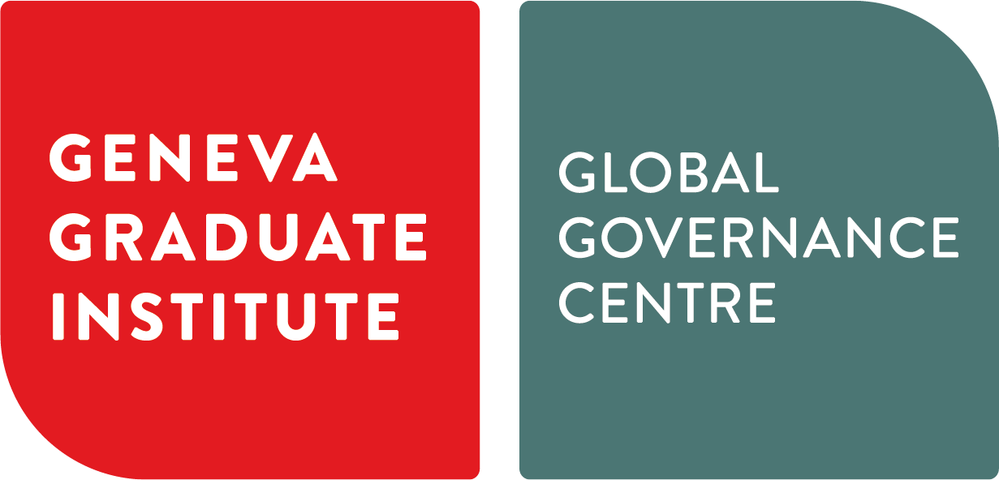
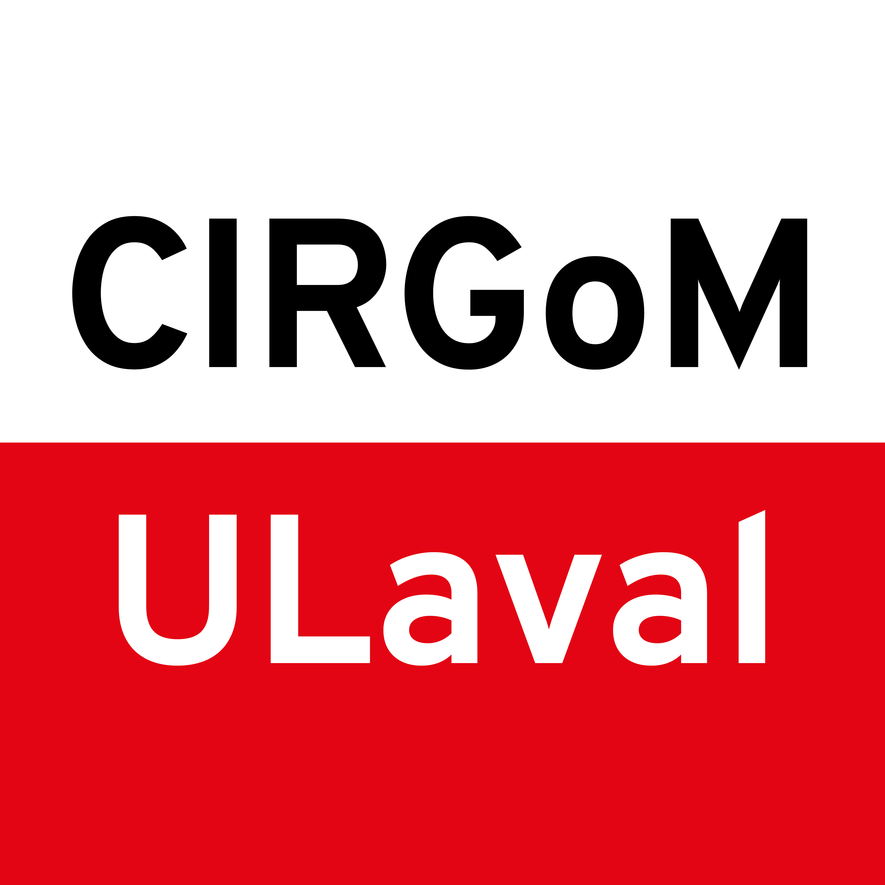
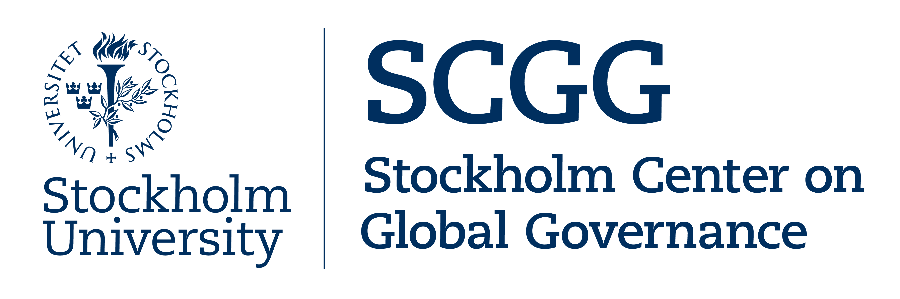
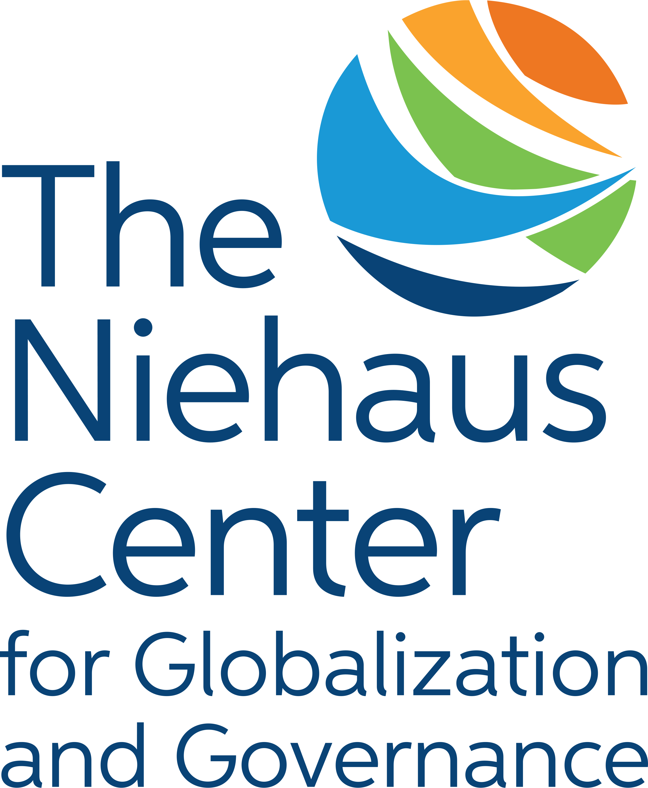

About GGRCC
The Global Governance Research Centre Consortium (GGRCC) is a collaborative network of research institutions and scholars dedicated to advancing the study of global governance.
Our Mission
Our mission is to foster rigorous, innovative research that addresses the most pressing challenges in global governance. We bring together diverse perspectives and methodologies to contribute to both academic scholarship and practical policy solutions.
Founding Members
The GGRCC was established by six leading research institutions committed to advancing the study of global governance:

Global Governance Centre
Geneva Graduate Institute, Switzerland

Centre Interdisciplinaire de Recherche sur la Gouvernance Mondiale
Université Laval, Canada

Stockholm Centre for Global Governance
Stockholm University, Sweden
Robert Schuman Centre
European University Institute, Italy

Niehaus Center for Globalization and Governance
Princeton University, United States of America
Institute on Global Conflict and Cooperation
University of California San Diego, United States of America